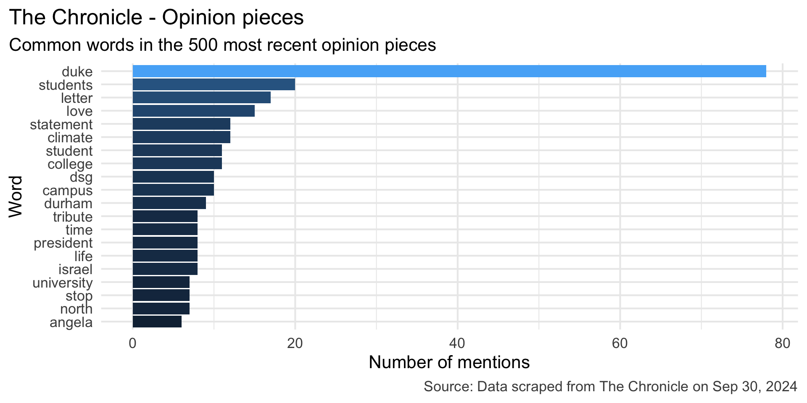
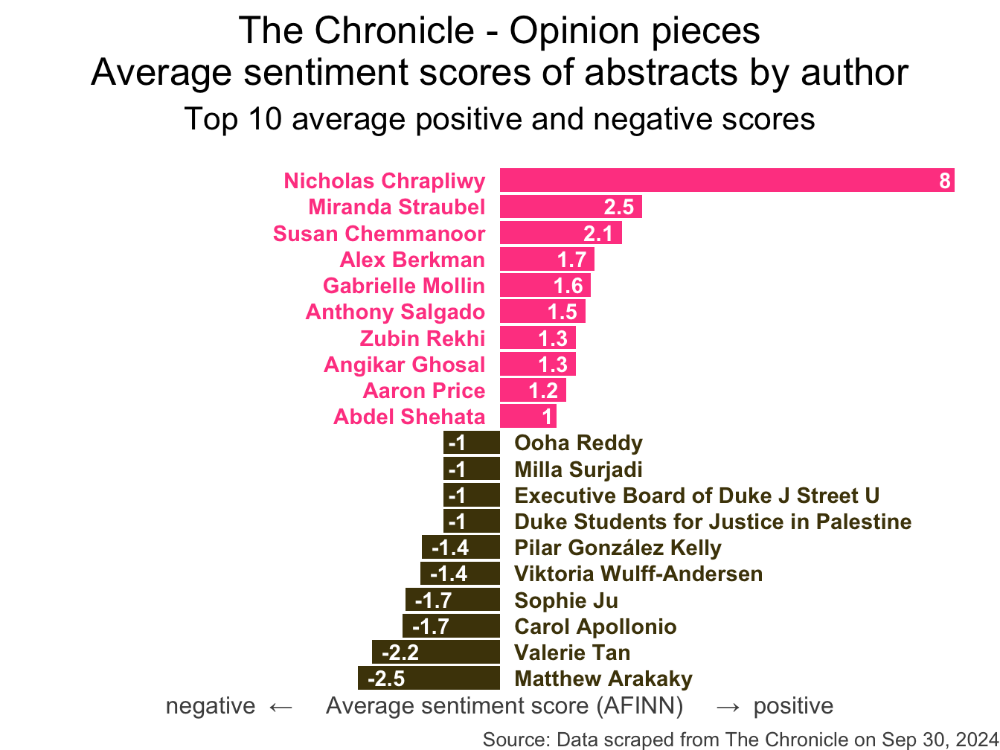
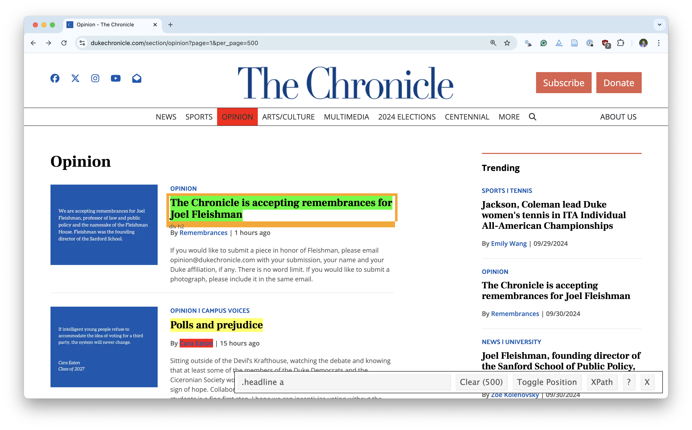
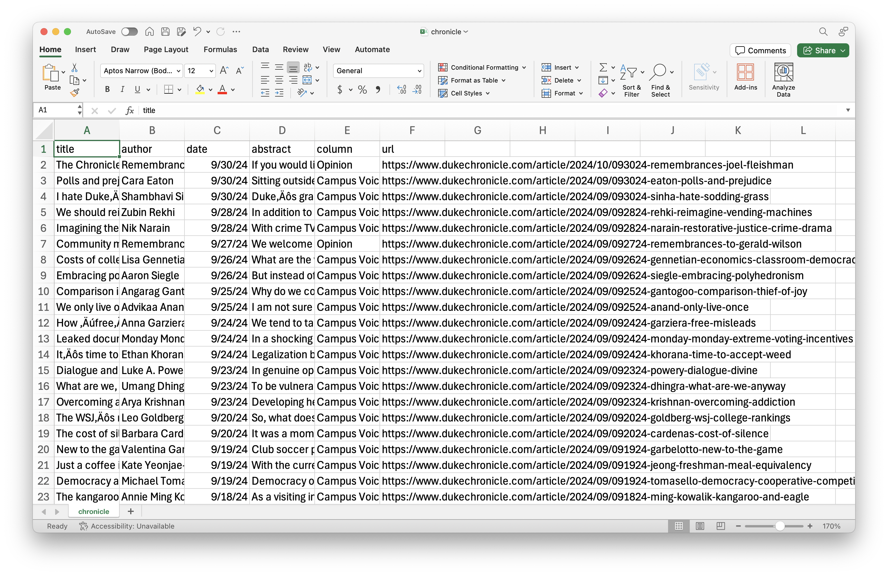

Web scaping
Lecture 10
Warm-up
While you wait…
-
If you haven’t yet done so: Install a Chrome browser and the SelectorGadget extension:
Go to your
aeproject in RStudio.Make sure all of your changes up to this point are committed and pushed, i.e., there’s nothing left in your Git pane.
Click Pull to get today’s application exercise file: ae-10-chronicle-scrape.qmd.
Wait till the you’re prompted to work on the application exercise during class before editing the file.
Announcements
Midterm things:
- Practice midterm: Posted on the course website
- Lecture recordings: Available until the in-class midterm, link emailed earlier today
- Application exercise catch-up: Complete all application exercises up to the midterm by the in-class midterm (and get any missed points!)
- Midterm review: In class on Thursday, come with questions!
From last time
Age gaps
Data prep:
Age gaps
Label the data:
age_gaps_heterosexual <- age_gaps_heterosexual |>
mutate(
older = case_when(
character_1_gender == "woman" & actor_1_age > actor_2_age ~ "woman older",
character_2_gender == "woman" & actor_2_age > actor_1_age ~ "woman older",
character_1_gender == "man" & actor_1_age > actor_2_age ~ "man older",
character_2_gender == "man" & actor_2_age > actor_1_age ~ "man older",
actor_1_age == actor_2_age ~ "same age"
)
)Age gaps
Age gaps split:
. . .
Check:
Age gaps
Write data
Data on the web
Reading The Chronicle
How often do you read The Chronicle?
Every day
3-5 times a week
Once a week
Rarely
Reading The Chronicle
What do you think is the most common word in the titles of The Chronicle opinion pieces?
Analyzing The Chronicle

Reading The Chronicle
How do you think the sentiments in opinion pieces in The Chronicle compare across authors? Roughly the same? Wildly different? Somewhere in between?
Analyzing The Chronicle

All of this analysis is done in R!
(mostly) with tools you already know!
Common words in The Chronicle titles
Code for the earlier plot:
stop_words <- read_csv("data/stop-words.csv")
chronicle |>
tidytext::unnest_tokens(word, title) |>
mutate(word = str_replace_all(word, "’", "'")) |>
anti_join(stop_words) |>
count(word, sort = TRUE) |>
filter(word != "duke's") |>
slice_head(n = 20) |>
mutate(word = fct_reorder(word, n)) |>
ggplot(aes(y = word, x = n, fill = log(n))) +
geom_col(show.legend = FALSE) +
theme_minimal(base_size = 16) +
labs(
x = "Number of mentions",
y = "Word",
title = "The Chronicle - Opinion pieces",
subtitle = "Common words in the 500 most recent opinion pieces",
caption = "Source: Data scraped from The Chronicle on Sep 30, 2024"
) +
theme(
plot.title.position = "plot",
plot.caption = element_text(color = "gray30")
)Avg sentiment scores of abstracts
Code for the earlier plot:
afinn_sentiments <- read_csv("data/afinn-sentiments.csv")
chronicle |>
tidytext::unnest_tokens(word, abstract) |>
mutate(word = str_replace_all(word, "’", "'")) |>
anti_join(stop_words) |>
left_join(afinn_sentiments) |>
group_by(author, title) |>
summarize(total_sentiment = sum(value, na.rm = TRUE), .groups = "drop") |>
group_by(author) |>
summarize(
n_articles = n(),
avg_sentiment = mean(total_sentiment, na.rm = TRUE),
) |>
filter(n_articles > 1 & !is.na(author)) |>
arrange(desc(avg_sentiment)) |>
slice(c(1:10, 40:49)) |>
mutate(
author = fct_reorder(author, avg_sentiment),
neg_pos = if_else(avg_sentiment < 0, "neg", "pos"),
label_position = if_else(neg_pos == "neg", 0.25, -0.25)
) |>
ggplot(aes(y = author, x = avg_sentiment)) +
geom_col(aes(fill = neg_pos), show.legend = FALSE) +
geom_text(
aes(x = label_position, label = author, color = neg_pos),
hjust = c(rep(1,10), rep(0, 10)),
show.legend = FALSE,
fontface = "bold"
) +
geom_text(
aes(label = round(avg_sentiment, 1)),
hjust = c(rep(1.25, 10), rep(-0.25, 10)),
color = "white",
fontface = "bold"
) +
scale_fill_manual(values = c("neg" = "#4d4009", "pos" = "#FF4B91")) +
scale_color_manual(values = c("neg" = "#4d4009", "pos" = "#FF4B91")) +
coord_cartesian(xlim = c(-8, 8)) +
labs(
x = "negative ← Average sentiment score (AFINN) → positive",
y = NULL,
title = "The Chronicle - Opinion pieces\nAverage sentiment scores of abstracts by author",
subtitle = "Top 10 average positive and negative scores",
caption = "Source: Data scraped from The Chronicle on Sep 30, 2024"
) +
theme_void(base_size = 16) +
theme(
plot.title = element_text(hjust = 0.5),
plot.subtitle = element_text(hjust = 0.5, margin = unit(c(0.5, 0, 1, 0), "lines")),
axis.title.x = element_text(color = "gray30", size = 12),
plot.caption = element_text(color = "gray30", size = 10)
)Where is the data coming from?
Where is the data coming from?
chronicle# A tibble: 500 × 6
title author date abstract column url
<chr> <chr> <date> <chr> <chr> <chr>
1 The Chronicle is accepting… Remem… 2024-09-30 If you … Opini… http…
2 Polls and prejudice Cara … 2024-09-30 Sitting… Campu… http…
3 I hate Duke’s sodding grass Shamb… 2024-09-30 Duke’s … Campu… http…
4 We should reimagine our ve… Zubin… 2024-09-28 In addi… Campu… http…
5 Imagining the restorative … Nik N… 2024-09-28 With cr… Campu… http…
6 Community members share re… Remem… 2024-09-27 We welc… Opini… http…
7 Costs of college campus ec… Lisa … 2024-09-26 What ar… Campu… http…
8 Embracing polyhedronism Aaron… 2024-09-26 But ins… Campu… http…
9 Comparison is the thief of… Angar… 2024-09-25 Why do … Campu… http…
10 We only live once: Protect… Advik… 2024-09-25 I am no… Campu… http…
# ℹ 490 more rowsWeb scraping
Scraping the web: what? why?
Increasing amount of data is available on the web
These data are provided in an unstructured format: you can always copy&paste, but it’s time-consuming and prone to errors
Web scraping is the process of extracting this information automatically and transform it into a structured dataset
-
Two different scenarios:
Screen scraping: extract data from source code of website, with html parser (easy) or regular expression matching (less easy).
Web APIs (application programming interface): website offers a set of structured http requests that return JSON or XML files.
Hypertext Markup Language
Most of the data on the web is still largely available as HTML - while it is structured (hierarchical) it often is not available in a form useful for analysis (flat / tidy).
<html>
<head>
<title>This is a title</title>
</head>
<body>
<p align="center">Hello world!</p>
<br/>
<div class="name" id="first">John</div>
<div class="name" id="last">Doe</div>
<div class="contact">
<div class="home">555-555-1234</div>
<div class="home">555-555-2345</div>
<div class="work">555-555-9999</div>
<div class="fax">555-555-8888</div>
</div>
</body>
</html>rvest
- The rvest package makes basic processing and manipulation of HTML data straight forward
- It’s designed to work with pipelines built with
|> - rvest.tidyverse.org

rvest
Core functions:
read_html()- read HTML data from a url or character string.html_elements()- select specified elements from the HTML document using CSS selectors (or xpath).html_element()- select a single element from the HTML document using CSS selectors (or xpath).html_table()- parse an HTML table into a data frame.html_text()/html_text2()- extract tag’s text content.html_name- extract a tag/element’s name(s).html_attrs- extract all attributes.html_attr- extract attribute value(s) by name.
html, rvest, & xml2
html <-
'<html>
<head>
<title>This is a title</title>
</head>
<body>
<p align="center">Hello world!</p>
<br/>
<div class="name" id="first">John</div>
<div class="name" id="last">Doe</div>
<div class="contact">
<div class="home">555-555-1234</div>
<div class="home">555-555-2345</div>
<div class="work">555-555-9999</div>
<div class="fax">555-555-8888</div>
</div>
</body>
</html>'. . .
read_html(html){html_document}
<html>
[1] <head>\n<meta http-equiv="Content-Type" content="text/html; cha ...
[2] <body>\n <p align="center">Hello world!</p>\n <br><div cl ...Selecting elements
read_html(html) |> html_elements("p"){xml_nodeset (1)}
[1] <p align="center">Hello world!</p>. . .
read_html(html) |> html_elements("p") |> html_text()[1] "Hello world!". . .
read_html(html) |> html_elements("p") |> html_name()[1] "p". . .
read_html(html) |> html_elements("p") |> html_attrs()[[1]]
align
"center" . . .
read_html(html) |> html_elements("p") |> html_attr("align")[1] "center"CSS selectors
- We will use a tool called SelectorGadget to help us identify the HTML elements of interest by constructing a CSS selector which can be used to subset the HTML document.
. . .
- Some examples of basic selector syntax is below,
| Selector | Example | Description |
|---|---|---|
| .class | .title |
Select all elements with class=“title” |
| #id | #name |
Select all elements with id=“name” |
| element | p |
Select all <p> elements |
| element element | div p |
Select all <p> elements inside a <div> element |
| element>element | div > p |
Select all <p> elements with <div> as a parent |
| [attribute] | [class] |
Select all elements with a class attribute |
| [attribute=value] | [class=title] |
Select all elements with class=“title” |
CSS classes and ids
read_html(html) |> html_elements(".name"){xml_nodeset (2)}
[1] <div class="name" id="first">John</div>
[2] <div class="name" id="last">Doe</div>. . .
read_html(html) |> html_elements("div.name"){xml_nodeset (2)}
[1] <div class="name" id="first">John</div>
[2] <div class="name" id="last">Doe</div>. . .
read_html(html) |> html_elements("#first"){xml_nodeset (1)}
[1] <div class="name" id="first">John</div>Text with html_text() vs. html_text2()
html = read_html(
"<p>
This is the first sentence in the paragraph.
This is the second sentence that should be on the same line as the first sentence.<br>This third sentence should start on a new line.
</p>"
). . .
html |> html_text()[1] " \n This is the first sentence in the paragraph.\n This is the second sentence that should be on the same line as the first sentence.This third sentence should start on a new line.\n "html |> html_text2()[1] "This is the first sentence in the paragraph. This is the second sentence that should be on the same line as the first sentence.\nThis third sentence should start on a new line."HTML tables with html_table()
html_table =
'<html>
<head>
<title>This is a title</title>
</head>
<body>
<table>
<tr> <th>a</th> <th>b</th> <th>c</th> </tr>
<tr> <td>1</td> <td>2</td> <td>3</td> </tr>
<tr> <td>2</td> <td>3</td> <td>4</td> </tr>
<tr> <td>3</td> <td>4</td> <td>5</td> </tr>
</table>
</body>
</html>'. . .
read_html(html_table) |>
html_elements("table") |>
html_table()[[1]]
# A tibble: 3 × 3
a b c
<int> <int> <int>
1 1 2 3
2 2 3 4
3 3 4 5SelectorGadget
SelectorGadget (selectorgadget.com) is a javascript based tool that helps you interactively build an appropriate CSS selector for the content you are interested in.

Application exercise
Opinion articles in The Chronicle
Go to https://www.dukechronicle.com/section/opinion?page=1&per_page=500.
How many articles are on the page?
Goal
- Scrape data and organize it in a tidy format in R
- Perform light text parsing to clean data
- Summarize and visualze the data

ae-10-chronicle-scrape
Go to your ae project in RStudio.
If you haven’t yet done so, make sure all of your changes up to this point are committed and pushed, i.e., there’s nothing left in your Git pane.
If you haven’t yet done so, click Pull to get today’s application exercise file: ae-10-chronicle-scrape.qmd and
chronicle-scrape.R.
Recap
- Use the SelectorGadget identify tags for elements you want to grab
- Use rvest to first read the whole page (into R) and then parse the object you’ve read in to the elements you’re interested in
- Put the components together in a data frame (a tibble) and analyze it like you analyze any other data
A new R workflow
When working in a Quarto document, your analysis is re-run each time you knit
If web scraping in a Quarto document, you’d be re-scraping the data each time you knit, which is undesirable (and not nice)!
-
An alternative workflow:
- Use an R script to save your code
- Saving interim data scraped using the code in the script as CSV or RDS files
- Use the saved data in your analysis in your Quarto document
Web scraping considerations
Ethics: “Can you?” vs “Should you?”

Source: Brian Resnick, Researchers just released profile data on 70,000 OkCupid users without permission, Vox.
“Can you?” vs “Should you?”

Challenges: Unreliable formatting

Challenges: Data broken into many pages

Workflow: Screen scraping vs. APIs
Two different scenarios for web scraping:
Screen scraping: extract data from source code of website, with html parser (easy) or regular expression matching (less easy)
Web APIs (application programming interface): website offers a set of structured http requests that return JSON or XML files